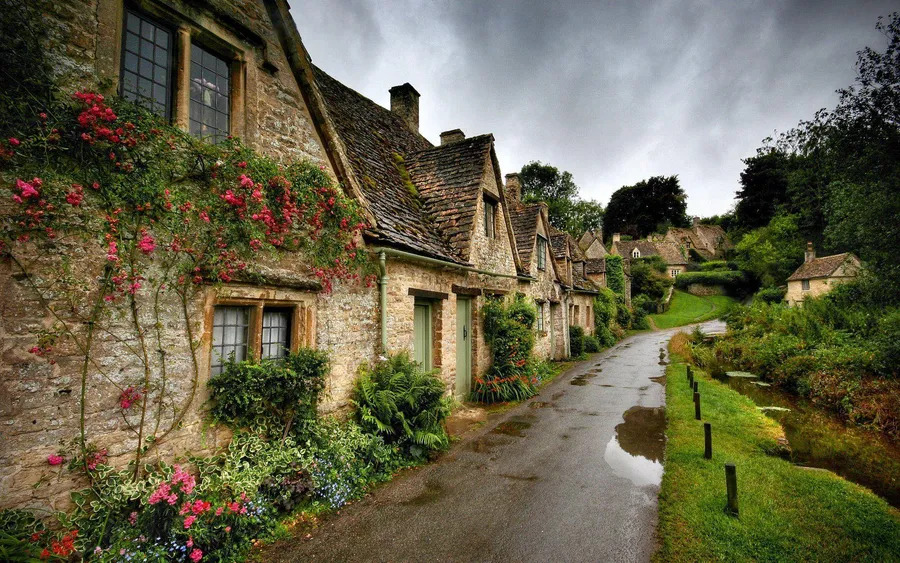
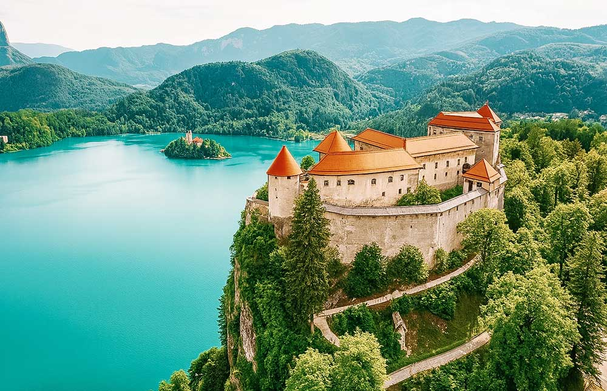
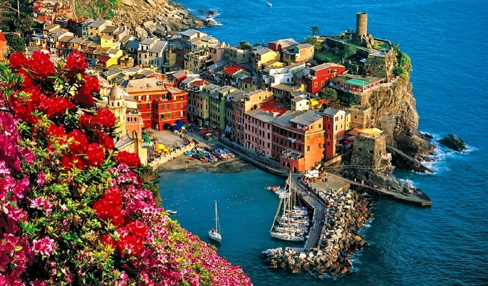
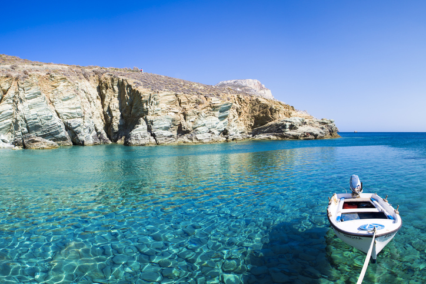
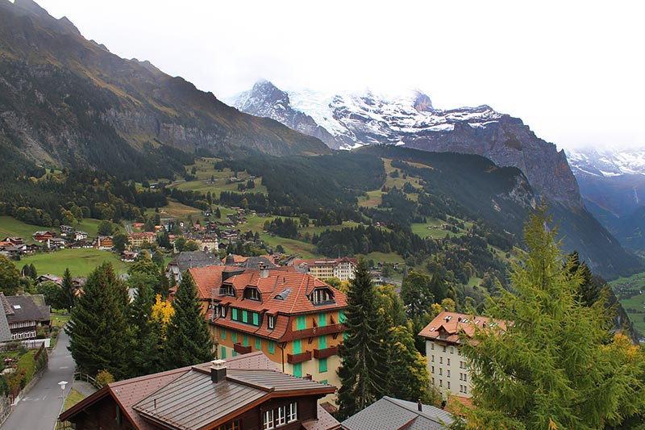
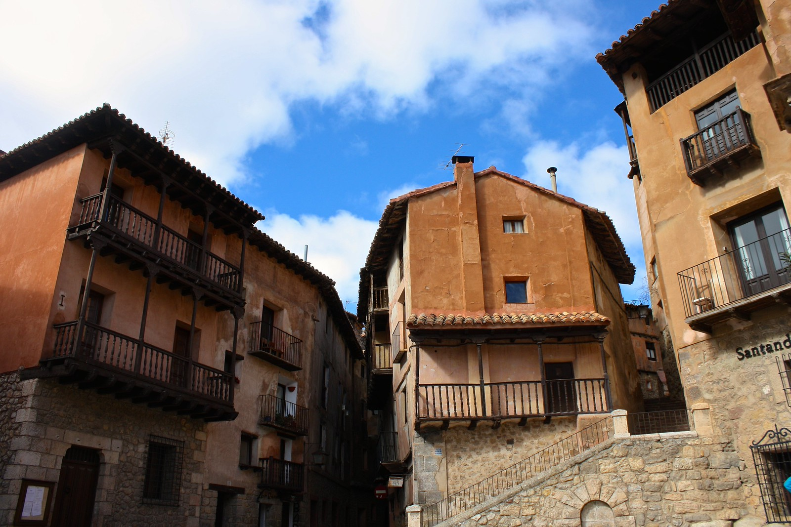
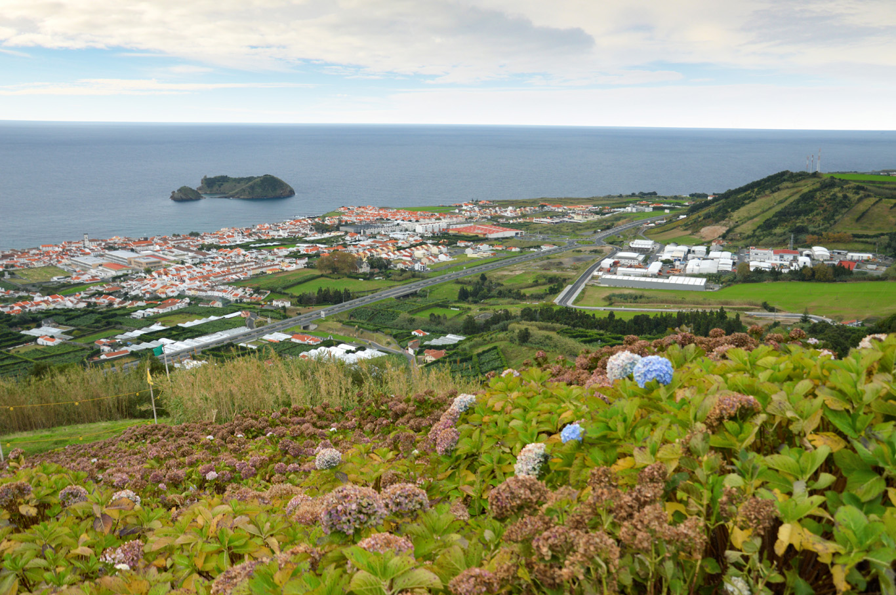
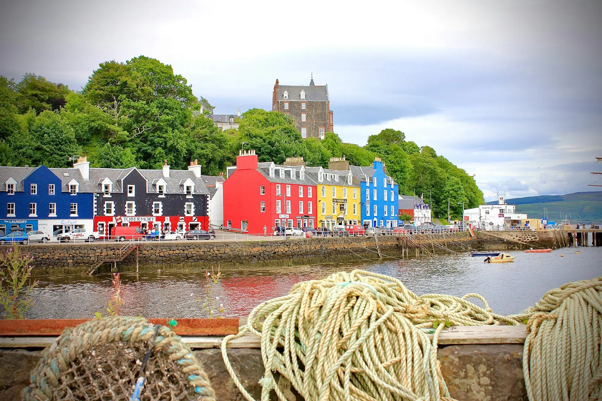

Hallstatt, Áustria
Um vilarejo alpino com mais de 7.000 anos de história, situado à beira do lago Hallstätter See, cercado pelos Alpes.
Alpes Austríacos
História antiga
Role horizontalmente para conhecer todos os vilarejos selecionados.
Um vilarejo alpino com mais de 7.000 anos de história, situado à beira do lago Hallstätter See, cercado pelos Alpes.

Frequentemente citado como o mais bonito da Inglaterra, famoso pela Arlington Row — casas de pedra do século XVII.

Ícone das Cíclades com cúpulas azuis e casas caiadas, famosa pelo espetáculo do pôr do sol no Mar Egeu.

Famoso pelo Lago Bled, com uma ilha no centro que abriga uma igreja, tudo emoldurado pelo Castelo de Bled e montanhas ao redor.

Localizado na costa íngreme de Cinque Terre, Vernazza destaca-se pelas casas coloridas e pela vista direta para o mar Mediterrâneo.

Uma alternativa mais calma a Santorini: Folegandros oferece ruas brancas, mirantes tranquilos e um ritmo de ilha mais sereno.

Uma vila alpina tradicional, sem carros, ideal para quem busca contato com a natureza e trilhas nos Alpes suíços.

Uma das vilas medievais mais bonitas da Espanha, com muralhas, ruas estreitas e arquitetura em tons terracota.

Famoso pelas águas termais e caldeiras na ilha de São Miguel — um destino de geotermia, jardins e gastronomia local cozida no calor natural.

Conhecido pelo seu porto colorido, Tobermory é acolhedor e diferente — ótimo para passeios costeiros e observação de vida marinha.
Crie sua viagem perfeita pelos vilarejos europeus com nossos pacotes personalizados.
Pacotes completos com voo direto e acomodação em pousadas charmosas
Carro com motorista para conectar todos os vilarejos sem complicações
Jantares em casas de família e tours guiados exclusivos
Conheça nossa equipe apaixonada por vilarejos europeus.
Conselhos essenciais para sua viagem perfeita aos vilarejos.
Entre Maio e Junho ou entre Setembro e Outubro: clima perfeito, menos turistas, preços melhores.
Sapatos confortáveis... há muitas escadas!, meias, camadas leves, capa de chuva para Alpes.
Trem regional, pousadas familiares, prefira almoçar onde os locais comem, compre passe de vilarejos.